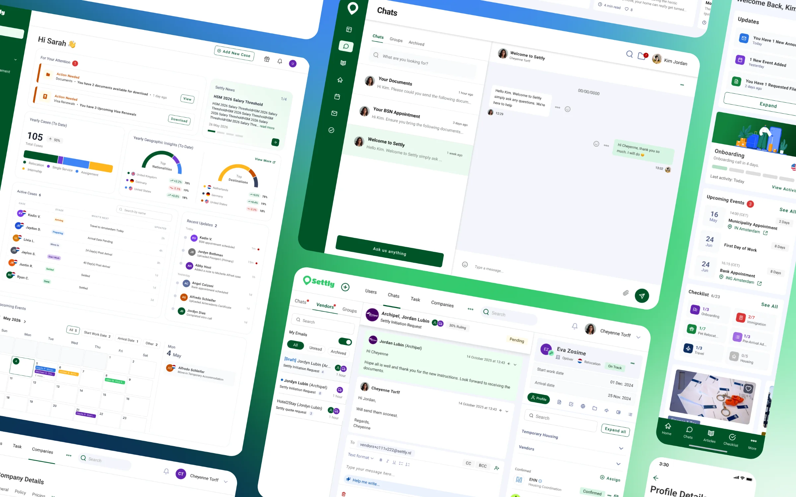
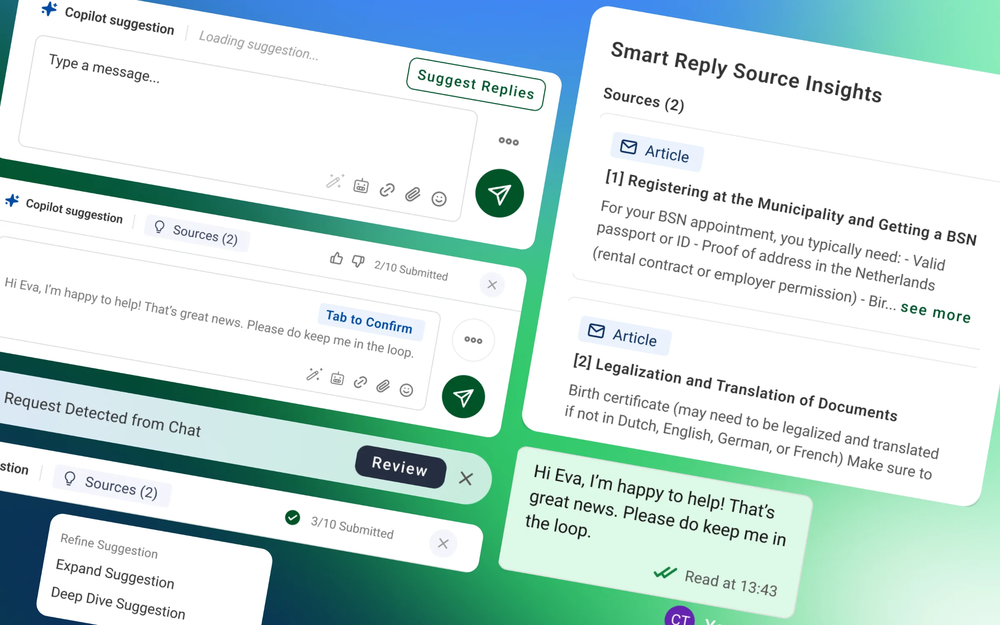
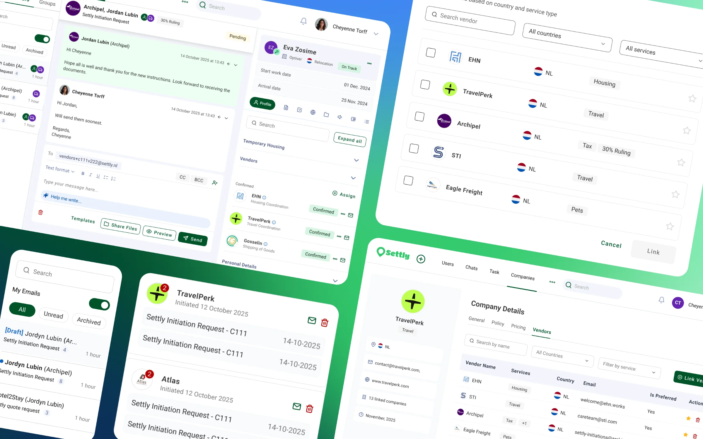
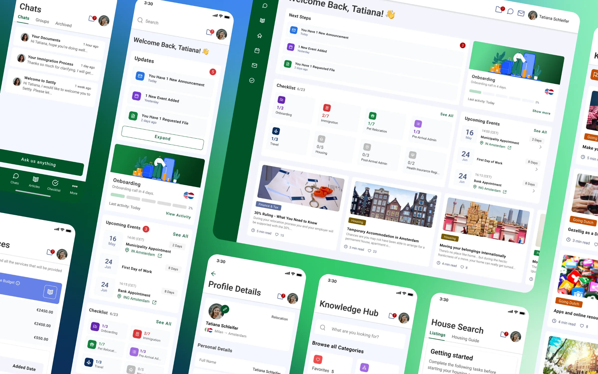

One relocation platform, three very different users.
I lead design for Settly's B2B2C relocation platform, used by HR teams, the hosts who manage each move, and the employees relocating. Three projects show how that work cut manual effort, halved vendor response times and more than doubled mobile adoption.
- Role
- Senior UX Designer
- Timeline
- Oct 2024 - Now
- Platform
- Mobile & web app, internal platform
- Industry
- Relocation technology · HR
- Tools
- Figma, Mixpanel

Relocating for work is stressful, and Settly supports every side of it. I lead design end to end, from discovery and research to prototyping, testing and delivery, using interviews, usability tests and Mixpanel data to guide decisions.
Simple for each user, without becoming three products.
Settly serves three audiences through one platform. Each needed an experience that felt simple for them, while the product stayed one connected system.
HR teams
Manage their company's relocations and keep track of each employee's move.
Hosts
Settly's operations team, who run each relocation case and coordinate employees and vendors.
Relocating employees
Moving for work and trying to get through a stressful process with confidence.
Three projects, three audiences.
AI drafts the message. The host stays in charge.
The problem
Hosts spent a lot of time writing repetitive messages to employees and vendors. Templates helped, but hosts still had to find the right one, then personalise and adapt it. Fully automated replies weren't the answer either: sensitive relocation cases need human judgement.
The solution
We designed an AI assistant that writes one draft reply using details from the relocation case. Hosts stay in control: they can edit the draft or refine it with quick actions. We later extended the same interaction to vendor communication and other operational workflows.

Vendor emails out of the inbox and into the case.
The problem
Hosts talked to relocation vendors through external email inboxes. Conversations weren't linked to cases, vendor information was hard to find, and teams couldn't easily see whether a vendor had been contacted, sent a quote or confirmed a service.
The solution
We brought vendor search and communication into Settly's internal platform. Hosts can search and filter vendors by what the case needs, email them from a case-specific address, use templates, and track every request by status.
- Contacted
- Quotation requested
- Confirmed

Answering three questions every employee has.
The problem
Relocating employees struggled to see their overall progress, what needed their attention and what would happen next. Tasks, guidance and service information were spread across the product, which made the mobile app less useful and pushed employees to ask their host instead.
The solution
We redesigned the dashboard, checklist and key mobile and web journeys around three questions. The new experience puts upcoming actions first, surfaces relevant guidance and links tasks, services and self-service content more clearly.
- What is happening?
- What do I need to do next?
- Where can I get help?
